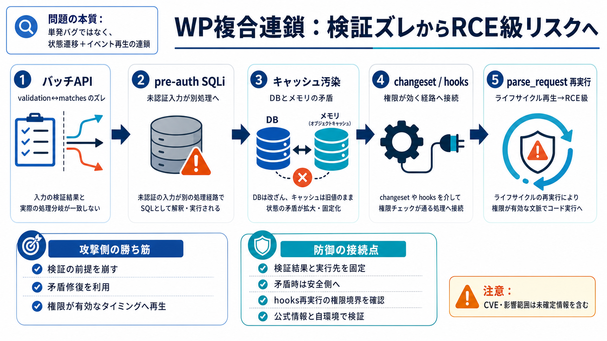

GPT-5.6 gets better at cybersecurity - Help Net Security
OpenAI has started rolling out the GPT-5.6 series models in limited preview to a small group of trusted partners through…

GPT（GPT-5.6 Sol Ultra）を用いた探索により、WordPressの「検証ズレ→SQLi→状態操作→hooks再実行」で、認証なしから任意コード実行級の到達を狙う物語を要約します。
これは「SQLiがある」だけの話ではなく、Webアプリ内部の実行順序と状態（キャッシュ、イベント）をまたいで影響が拡大する設計不備が問題になります。
WordPressのバッチAPI（/wp-json/batch/v1）で、validation結果と実行ハンドラ（matches）が、エラー分岐（is_wp_error(...)）により対応づかなくなると説明されています。
validation配列と、実際に対応づけられたhandler（matches）がズレると、サニタイズ済みであるべき入力が別エンドポイント側の実行に混入し得ます。
pre-auth SQLiはデータ漏えいに留まらず、偽の投稿（キャッシュ対象）を作り、整合性処理で「存在しないはずのものを存在させる」方向へ進むと述べられています。
アプリが矛盾を“直そうとする”振る舞い（キャッシュ整合性修復）が攻撃者に有利に働き、攻撃対象の世界観を内部状態へ実装していきます。
次に、テーマ編集などに関係するcustomize_changesetを介して、管理者権限を一時的に前提とする処理経路へ接続します。
投稿公開イベントに絡むフック（hooks）を“任意のアクション呼び出し”へ拡張する、という方針が説明されています。
最終局面ではparse_requestフックを起点としてリクエスト処理を再帰的に再実行し、管理者として成立するはずの操作（例：管理者作成）を成功させたと述べられています。
まとめると、「検証・実行の不整合」→「pre-auth SQLi」→「キャッシュ汚染と整合性」→「changeset・hooks」→「parse_request再実行」でRCEへ至ります。
記事ではGPTプロンプトに探索ヒューリスティクス（多様ルート維持、行き詰まり遮断、相互検証など）を埋め込み、連鎖候補の発見を狙ったと説明しています。
防御側はSQLi対策に加え、バッチの検証・実行対応の整合性、サニタイズ前提（配列/スカラー差）、キャッシュ矛盾の安全化、hooks再実行経路の権限境界を見直す必要があります。
CVEや影響範囲、修正状況が十分に示されず、一部がマスクされているため、この内容は「確定的な脅威評価」ではなく「技術洞察」として扱うべきです。
この事例が示すのは、「検証・実行のズレ」「状態（キャッシュ）操作」「hooks・ライフサイクル再実行」が組み合わさると、pre-auth SQLiでもRCE級に跳ね得る、という構造です。
OpenAI has started rolling out the GPT-5.6 series models in limited preview to a small group of trusted partners through…
OpenAI’s June 26, 2026 preview of GPT-5.6 Sol is not a routine model release with a larger benchmark chart and a broader…
OpenAI's newly released GPT-5.6 Sol model contains severe security vulnerabilities. for vulnerability discovery and expl…
![OpenAI CEO Sam Altman sitting next to U.S. President Donald Trump at the G7 Meeting in Evian, France.](https://fortune…
# OpenAI Unveils GPT-5.6 Sol as Its Most Advanced Cybersecurity AI. The company says Sol matches competing systems like …